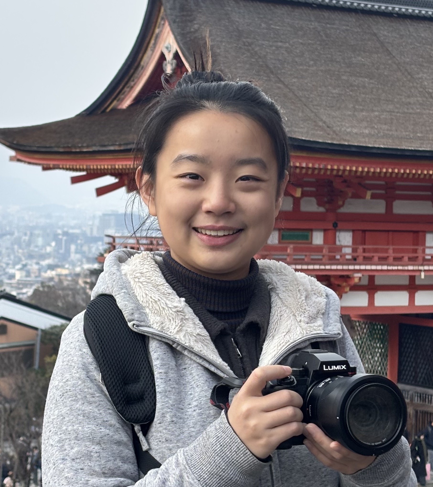

Sun Yat-sen University
Shenzhen, China
Qingqiao Cai
Sun Yat-sen University · Visiting Student Researcher at the University of Notre Dame
I am an undergraduate student majoring in Biomedical Engineering at Sun Yat-sen University and currently a visiting student researcher at the University of Notre Dame .
My research interests lie at the intersection of wearable bioelectronics, biosensing, electrophysiological interfaces, and neural engineering . I am particularly interested in developing integrated wearable systems that combine physiological and biochemical sensing for continuous, long-term, and personalized health monitoring.
My undergraduate research has progressively explored several components of this vision, including neural interfaces, wearable EEG–EOG acquisition, electrochemical biosensing, and microneedle-based wearable electronics.
News
Research
My research experiences span biointerfaces, physiological signal acquisition, biochemical sensing, and wearable system integration. These projects have progressively shaped my long-term interest in integrated wearable bioelectronics for continuous health monitoring.
Wearable Bioelectronics & Biosensing
Development of integrated wearable platforms combining electrochemical sensing, microneedle interfaces, analog front-end electronics, power management, and wireless communication for continuous biochemical and physiological monitoring.
Wearable Electrophysiology
Design of low-noise wearable electrophysiological acquisition systems for EEG and EOG monitoring, including high-precision analog front ends, PCB design, embedded systems, Bluetooth communication, and real-time signal acquisition.
Neural Interfaces
Exploration of material and structural approaches for interfacing with neural tissue, including implantable brain-computer interfaces, magnetically guided electrode implantation, and biodegradable neural conduits.
Research Overview

Selected Projects

Wearable Microneedle Bioelectronic System for Continuous Health Monitoring
Developing an integrated wearable microneedle bioelectronic platform for continuous electrochemical sensing and physiological monitoring. The system combines microneedle sensor interfaces with multiple analog front-end channels, power management, wireless communication, and real-time data acquisition.
My primary responsibility is the hardware system design, including defining the overall architecture, selecting key components, and designing a two-layer wearable PCB integrating two electrochemical sensing channels, four open-circuit potential channels, signal conditioning, power management, and Bluetooth communication.

Wearable EEG–EOG Monitoring System for Human-Computer Interaction
Designed and developed a wearable electrophysiological sensing platform for simultaneous EEG and EOG acquisition, targeting human-computer interaction and long-term physiological monitoring.
I independently designed and iterated the core acquisition hardware using the ADS1299 and ESP32-S3, including the low-noise analog front end, power-supply circuitry, PCB layout, and Bluetooth Low Energy communication. I also developed a real-time wireless data transmission workflow and MATLAB-based signal-processing pipeline.

Implantable Brain-Computer Interface for Large-Scale Neural Recording
Contributed to the development of an implantable brain-computer interface designed for large-scale neural recording through magnetically guided electrode implantation.
My work focused on structural fabrication, including PDMS guide channels, magnetic head components, reproducible channel fabrication, and micro/nano stereolithography-based electrode scaffolds for evaluating large-area neural interface designs.
Selected Publications
Contact
I am always interested in discussing research related to wearable bioelectronics, biosensing, electrophysiological systems, and neural interfaces.
Email: caiqq8@outlook.com
Sun Yat-sen University · Shenzhen, China